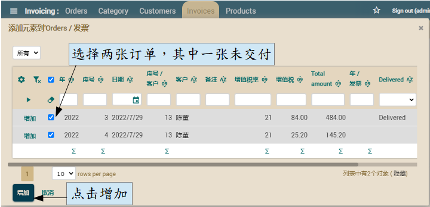

@Column(columnDefinition="BOOLEAN DEFAULT FALSE")
boolean delivered;
@View(extendsView="super.DEFAULT",
members=
"estimatedDeliveryDays, delivered," + // 添加已送达
"invoice { invoice }"
)
...
public class Order extends CommercialDocument {
@EntityValidator(
value=com.yourcompany.invoicing.validators.DeliveredToBeInInvoiceValidator.class, // 具有验证逻辑的类
properties= {
//这些属性的值会在执行验证之前从 Order 实体中移到验证器
@PropertyValue(name="year"),
@PropertyValue(name="number"),
@PropertyValue(name="invoice"),
@PropertyValue(name="delivered")
}
)
public class Order extends CommercialDocument {
package com.yourcompany.invoicing.validators; // 在 validators 包
import com.yourcompany.invoicing.model.*;
import org.openxava.util.*;
import org.openxava.validators.*;
import lombok.*;
@Getter @Setter
public class DeliveredToBeInInvoiceValidator
implements IValidator { // 必须实现 IValidator
int year; // 要从 Order 注入的属性
int number;
boolean delivered;
Invoice invoice;
public void validate(Messages errors) // 验证的逻辑
throws Exception
{
if (invoice == null) return;
if (!delivered) {
errors.add( // 在 errors 添加消息，验证将失败
"order_must_be_delivered", // i18n 文件裡的 id
year, number); // 消息的参数
}
}
}
# Messages for the Invoicing application
order_must_be_delivered=订单 {0}/{1} 必须已送达才能添加到发票中
//在这里，以上中文会以unicode（統一碼）显示 < 请勿复制这行
